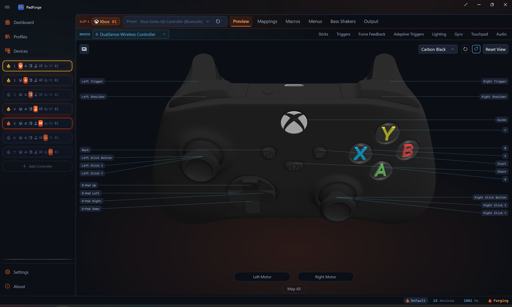

3D Model System¶
Renders interactive Xbox, PlayStation, and Nintendo controller models from Wavefront OBJ meshes using HelixToolkit.WPF. The loader, view, and animation code are adapted from Handheld Companion (CC BY-NC-SA 4.0), as is the Xbox 360 mesh. Every other family runs on purchased hado CGTrader meshes split per-part, with per-colorway texture atlases.
Namespace: PadForge.Models3D (model classes), PadForge.Views (view)
Architecture Overview¶
ControllerModelBase (abstract)
|
+-- ControllerModelXbox360 (HC mesh, flat plastic colors)
+-- ControllerModelXboxSeries (Series mesh, 13 colorways; also serves
| Xbox One / Elite / Adaptive profiles)
+-- ControllerModelDS4 (DualShock 4 mesh, 2 colorways)
+-- ControllerModelDualSense (DualSense mesh, 10 colorways)
| |
| +-- ControllerModelDualSenseEdge (Edge asset folder, own family)
+-- ControllerModelSwitch2Pro (Switch 2 Pro mesh; also serves the
original Switch Pro profile)
ControllerModelView (UserControl)
|
+-- HelixViewport3D (3D rendering viewport)
+-- ModelVisual3D (hosts the model3DGroup scene graph)
+-- CompositionTarget.Rendering (per-frame visual updates)
Model classes own geometry and materials. The view class owns the viewport, input handling, and animation. ControllerModelView.EnsureModel() instantiates the correct model class and assigns it to ModelVisual3D.Content.
ControllerModelBase¶
File: PadForge.App/Models3D/ControllerModelBase.cs
Abstract base class. Each subclass defines its own meshes, colors, and rotation points.
Data Dictionaries¶
| Field | Type | Description |
|---|---|---|
ButtonMap |
Dictionary<string, List<Model3DGroup>> |
PadSetting name to Model3DGroups for highlighting (supports multi-mesh buttons like button + overlay). |
ClickMap |
Dictionary<Model3DGroup, string> |
Model3DGroup to PadSetting name for hit-test click-to-record. Reverse of ButtonMap. |
DefaultMaterials |
Dictionary<Model3DGroup, Material> |
Original material per group. Restored after highlight/flash. |
HighlightMaterials |
Dictionary<Model3DGroup, Material> |
Accent-colored material per group. Applied on press or flash. |
Scene Graph¶
| Field | Type | Description |
|---|---|---|
model3DGroup |
Model3DGroup |
Root scene group containing all child meshes. Assigned to ModelVisual3D.Content. |
ModelName |
string |
Embedded-resource folder. "XBOX360" or "Switch2Pro" for the single-appearance families, "{family}.{appearance}" for the rest ("DS4.JetBlack", "DualSense.White", "DualSenseEdge.Edge", "XboxSeries.Carbon"). |
ModelFamily |
string |
Everything before the first . in ModelName, or ModelName when there is no dot. The identity EnsureModel() compares against, so a colorway swap does not read as a family swap. |
Touchpad |
Model3DGroup |
Touch surface, or null on models without one. DS4 points it at Screen.obj, DualSense at Touchpad.obj. |
RiderDecals |
HashSet<GeometryModel3D> |
Decal geometries appended into a moving host group. The view masks its accent overlay by the rider's own texture alpha for these. |
CoveringRiderDecals |
HashSet<GeometryModel3D> |
Riders whose art covers the whole host face (the Xbox guide emblem). Highlight tints the rider's own texels instead of hiding it. |
Scale and Touchpad Insets¶
| Member | Default | Description |
|---|---|---|
ModelScale |
1.0 |
Uniform scale applied at the host ModelVisual3D, not on model3DGroup, so the finger-sphere sibling visuals scale with the mesh. |
TouchpadXInsetFrac |
0.03 |
Fractional inset cropping the Touchpad mesh bounds to the real touch-sensitive width. |
TouchpadZTopInsetFrac |
0.12 |
Top inset. |
TouchpadZBottomInsetFrac |
0.12 |
Bottom inset. |
The defaults match the DS4 Screen.obj. DualSense overrides all three and ModelScale. Switch 2 Pro overrides ModelScale only.
Common Geometry Groups¶
| Field | Loaded From | Description |
|---|---|---|
MainBody |
MainBody.obj |
Main controller body mesh |
LeftThumb |
LeftStickClick.obj |
Left stick click mesh |
LeftThumbRing |
Joystick-Left-Ring.obj |
Left stick ring mesh (torus) |
RightThumb |
RightStickClick.obj |
Right stick click mesh |
RightThumbRing |
Joystick-Right-Ring.obj |
Right stick ring mesh (torus) |
LeftShoulderTrigger |
Shoulder-Left-Trigger.obj |
Left shoulder trigger mesh |
RightShoulderTrigger |
Shoulder-Right-Trigger.obj |
Right shoulder trigger mesh |
LeftMotor |
MotorLeft.obj |
Left rumble motor mesh |
RightMotor |
MotorRight.obj |
Right rumble motor mesh |
Rotation Parameters¶
| Field | Type | Description |
|---|---|---|
JoystickRotationPointCenterLeftMillimeter |
Vector3D |
Left stick tilt pivot |
JoystickRotationPointCenterRightMillimeter |
Vector3D |
Right stick tilt pivot |
JoystickMaxAngleDeg |
float |
Max stick tilt angle (degrees) |
ShoulderTriggerRotationPointCenterLeftMillimeter |
Vector3D |
Left trigger rotation pivot |
ShoulderTriggerRotationPointCenterRightMillimeter |
Vector3D |
Right trigger rotation pivot |
TriggerMaxAngleDeg |
float |
Max trigger depression angle (degrees) |
UpwardVisibilityRotationAxisLeft/Right |
Vector3D |
Shoulder visibility correction axis |
UpwardVisibilityRotationPointLeft/Right |
Vector3D |
Shoulder visibility correction origin |
ButtonFileMap¶
Maps Handheld Companion .obj filenames (using ButtonFlags enum names) to PadSetting property names (used by the recording system).
protected static readonly Dictionary<string, string> ButtonFileMap = new()
{
{ "B1.obj", "ButtonA" },
{ "B2.obj", "ButtonB" },
{ "B3.obj", "ButtonX" },
{ "B4.obj", "ButtonY" },
{ "L1.obj", "LeftShoulder" },
{ "R1.obj", "RightShoulder" },
{ "Back.obj", "ButtonBack" },
{ "Start.obj", "ButtonStart" },
{ "Special.obj", "ButtonGuide" },
{ "DPadUp.obj", "DPadUp" },
{ "DPadDown.obj", "DPadDown" },
{ "DPadLeft.obj", "DPadLeft" },
{ "DPadRight.obj", "DPadRight" },
{ "LeftStickClick.obj", "LeftThumbButton" },
{ "RightStickClick.obj", "RightThumbButton" },
};
Constructor Flow (Model Loading)¶
Steps are order-dependent:
- Set ModelName and derive ModelFamily.
ModelNameis the embedded-resource folder, chosen byHMaestroProfileCatalog.ResolveAssetFoldersagainst the slot'sProfileIdandOutputType, plus the pad's colorway for the families that have one.ModelFamilyis the part before the first dot. - Load common geometry via
LoadModel(): MainBody, stick rings, motors, triggers. - Register trigger ClickMap entries:
LeftShoulderTrigger->"LeftTrigger",RightShoulderTrigger->"RightTrigger". Triggers use ClickMap (not ButtonMap) because they are continuous axes, not toggle buttons. - Iterate ButtonFileMap: Calls
TryLoadModel()per entry, thenRegisterButton()to populate bothButtonMapandClickMap. Special cases:LeftStickClick.objandRightStickClick.objalso setLeftThumb/RightThumbreferences for tilt animation. - Join the rings to the stick-button lists.
LeftThumbRingis appended toButtonMap["LeftThumbButton"]andRightThumbRingtoButtonMap["RightThumbButton"], directly rather than throughRegisterButton(). A stick press glows the cap and the ring as one piece, and the ring stays out ofClickMapso it remains a quadrant target. - Add all parts to
model3DGroup.Children. Assigned toModelVisual3D.Content. - Subclass constructor continues. Loads extra meshes, applies texture atlases or flat colors, calls
DrawAccentHighlights(), then attaches rider decals and adds the static decal and transparent overlays last.
Note: Stick rings are NOT in ClickMap. The view handles ring clicks via IsStickRingHit() with quadrant-based axis detection, since ring clicks must determine axis direction from click position.
RegisterButton¶
Adds group to ButtonMap[padSettingName] (creates list if needed) and sets ClickMap[group] = padSettingName. This bidirectional mapping enables highlighting (name -> groups) and click detection (group -> name).
DrawAccentHighlights¶
Creates accent-colored DiffuseMaterial for all children. Reads the SystemAccentColorPrimary resource (a WPF-UI theme Color) and wraps it in a SolidColorBrush. Falls back to #FF6B2C ember orange. The brush stays solid because GradientHighlight() lerps its Color. AccentButtonBackground became an ember gradient in #175, so the highlight now derives from the accent Color instead. Called at the end of each subclass constructor.
Embedded Resource Loading¶
protected Model3DGroup LoadModel(string filename) // Throws FileNotFoundException
protected Model3DGroup TryLoadModel(string filename) // Returns null on failure
Loads .obj meshes from embedded resources via HelixToolkit's ObjReader. Searches manifest resource names by suffix (.{ModelName}.{filename}) to handle MSBuild digit-prefix mangling.
MSBuild mangling: 3DModels becomes _3DModels in resource names because MSBuild prefixes digit-leading folder names. Suffix matching avoids hard-coding the prefix.
string suffix = $".{ModelName}.{filename}";
foreach (var name in assembly.GetManifestResourceNames())
if (name.EndsWith(suffix, StringComparison.OrdinalIgnoreCase))
// Found it
Texture and Decal Helpers¶
protected Material LoadTexturedMaterial(string filename, double opacity = 1.0) // flat grey fallback
protected Material TryLoadTexturedMaterial(string filename, double opacity = 1.0) // null when absent
protected static Material AddGloss(Material baseMaterial, double intensity, double power)
protected void AttachRiderDecal(Model3DGroup host, string filename, Material material, bool covering = false)
protected static void ApplyMaterial(Model3DGroup group, Material material)
TryLoadTexturedMaterial loads a PNG atlas by the same suffix search, decodes it from a MemoryStream that outlives BeginInit/EndInit, and wraps it in a frozen DiffuseMaterial over an ImageBrush. ViewportUnits must be Absolute: the default RelativeToBoundingBox remaps the image onto each mesh's texcoord bounding box, which would render the whole atlas squeezed onto every part's own UV island.
AddGloss wraps a material in a MaterialGroup with a SpecularMaterial on top. DiffuseMaterial has no specular term, so a semi-transparent diffuse layer renders as a flat tint and clear ABXY shells read as no shell at all.
AttachRiderDecal loads a decal mesh and moves its GeometryModel3D children into the host group so they travel with it. Trigger labels rotate with a pulled trigger, stick-cap knurl art deflects with the stick. A missing file is a no-op, so a colorway without a given rider stays valid. covering: true also records the geometry in CoveringRiderDecals.
ApplyMaterial paints every GeometryModel3D in a group, front and back. ControllerModelXbox360 and ControllerModelSwitch2Pro instead keep a private SetMaterial that paints only Children[0].
Dispose Pattern¶
Clears all dictionaries and model3DGroup.Children. Standard dispose pattern with finalizer. Called by EnsureModel() when switching model types.
ControllerModelXbox360¶
File: PadForge.App/Models3D/ControllerModelXbox360.cs
Calls base("XBOX360").
Xbox 360-Specific Mesh Groups¶
| Field | Loaded From | Description |
|---|---|---|
MainBodyCharger |
MainBody-Charger.obj |
Battery pack/charger compartment |
SpecialRing |
SpecialRing.obj |
Guide button ring |
SpecialLED |
SpecialLED.obj |
Guide button LED indicator |
LeftShoulderBottom |
LeftShoulderBottom.obj |
Left bumper bottom piece |
RightShoulderBottom |
RightShoulderBottom.obj |
Right bumper bottom piece |
B1Button |
B1Button.obj |
A button colored overlay |
B2Button |
B2Button.obj |
B button colored overlay |
B3Button |
B3Button.obj |
X button colored overlay |
B4Button |
B4Button.obj |
Y button colored overlay |
Color Palette¶
| Name | Hex | Usage |
|---|---|---|
ColorPlasticBlack |
#707477 |
Default for most parts |
ColorPlasticWhite |
#D4D4D4 |
Main body, motors, shoulder bottoms |
ColorPlasticSilver |
#CEDAE1 |
Guide button |
ColorPlasticGreen |
#7cb63b |
A button |
ColorPlasticRed |
#ff5f4b |
B button |
ColorPlasticBlue |
#6ac4f6 |
X button |
ColorPlasticYellow |
#faa51f |
Y button |
Face button overlays (B1Button–B4Button) use transparent variants (Alpha = 150) so the base button color shows through.
Rotation Points¶
| Parameter | Value |
|---|---|
JoystickRotationPointCenterLeftMillimeter |
(-42.231, -6.10, 21.436) |
JoystickRotationPointCenterRightMillimeter |
(21.013, -6.1, -3.559) |
JoystickMaxAngleDeg |
19.0 |
ShoulderTriggerRotationPointCenterLeftMillimeter |
(-44.668, 3.087, 39.705) |
ShoulderTriggerRotationPointCenterRightMillimeter |
(44.668, 3.087, 39.705) |
TriggerMaxAngleDeg |
16.0 |
Material Assignment Order¶
- Face button overlays (
B1Button–B4Button) get transparent color materials and register intoButtonMapalongside base meshes for joint highlighting. SpecialLEDgets green transparent material.- Base face buttons (
B1.obj–B4.obj) get opaque color materials. - Guide button gets silver material.
- White parts:
MainBody,LeftMotor,RightMotor,LeftShoulderBottom,RightShoulderBottom. - Remaining parts default to black.
DrawAccentHighlights()called last.
ControllerModelDS4¶
File: PadForge.App/Models3D/ControllerModelDS4.cs
public class ControllerModelDS4 : ControllerModelBase
public ControllerModelDS4(string appearance = "JetBlack")
Calls base($"DS4.{Validate(appearance)}"). The mesh is the purchased hado model, classified into the Handheld Companion part names by spatial containment against the HC stand-in, sticks split at the cap cut.
Appearances¶
| Id | Name |
|---|---|
JetBlack |
Jet Black |
MagmaRed |
Magma Red |
An unrecognized id falls back to AppearanceIds[0] (JetBlack).
DS4-Specific Mesh Groups¶
| Field | Loaded From | Description |
|---|---|---|
LeftShoulderMiddle |
Shoulder-Left-Middle.obj |
Left shoulder middle piece |
RightShoulderMiddle |
Shoulder-Right-Middle.obj |
Right shoulder middle piece |
Screen |
Screen.obj |
Touchpad surface |
MainBodyBack |
MainBodyBack.obj |
Back panel |
AuxPort |
Aux-Port.obj |
Auxiliary port |
Triangle |
Triangle.obj |
Decorative triangle element |
DecalOverlay |
Decal.obj |
Static glyph and label overlay, added last |
Materials¶
Two atlases per colorway: Body.png for every solid part, Decal.png for the art. There is no flat color palette. MaterialBody paints every ButtonMap group first, then every remaining child of model3DGroup, then DrawAccentHighlights() runs.
Rider Decals¶
The face-button symbols (B1-Symbol.obj through B4-Symbol.obj) are decal art: their UVs address the decal atlas, not the body atlas. Giving them the body material skinned the buttons with whatever the body atlas holds at those coordinates. They attach as riders into their own button groups, so a press moves and lights the symbol with the button. Decal-Shoulder-Left/Right-Trigger.obj ride the triggers, Decal-L1.obj / Decal-R1.obj ride the bumpers so the lettering glows with a bumper press instead of staying grey in the static overlay.
The constructor also asks for d-pad arrow riders (DPadUpArrow.obj and siblings) and stick-ring knurl riders (Decal-Joystick-Left/Right-Ring.obj). Neither DS4 colorway folder ships those files, so AttachRiderDecal no-ops on them. That art comes from the body and decal atlases instead.
Touchpad Mapping¶
The DS4 exposes Screen.obj as Touchpad and registers ClickMap[Screen] = "TouchpadClick", so the surface is a click-to-record hit target. Touchpad is the base-class property the view reads for the touchpad click highlight and finger-sphere preview. DS4 does not override the touchpad inset fractions, so the view uses the defaults (TouchpadXInsetFrac = 0.03, TouchpadZTopInsetFrac = 0.12, TouchpadZBottomInsetFrac = 0.12).
Rotation Points¶
| Parameter | Value |
|---|---|
JoystickRotationPointCenterLeftMillimeter |
(-25.5, -5.086, -21.582) |
JoystickRotationPointCenterRightMillimeter |
(25.5, -5.086, -21.582) |
JoystickMaxAngleDeg |
19.0 |
ShoulderTriggerRotationPointCenterLeftMillimeter |
(-38.061, -0.34, 18.59) |
ShoulderTriggerRotationPointCenterRightMillimeter |
(38.061, -0.34, 18.59) |
TriggerMaxAngleDeg |
16.0 |
ModelScale |
1.0 (161 mm body width, real-world scale) |
The trigger hinge sits a third of the way up the part, by the Xbox One model's fraction of the trigger bounds, not at its top edge. Pinned at the top the paddle swept backwards into the bumper instead of swinging.
ControllerModelXboxSeries¶
File: PadForge.App/Models3D/ControllerModelXboxSeries.cs
public class ControllerModelXboxSeries : ControllerModelBase
public ControllerModelXboxSeries(string appearance = "Carbon", bool enableShare = true)
Calls base($"XboxSeries.{Validate(appearance)}"). Purchased hado CGTrader mesh, split per-part: 33 shells classified, the hybrid d-pad disc bisected into four wedges, sticks neck-split into cap-head ring groups and stem/base click groups.
This class replaced ControllerModelXboxOne, which no longer exists. Xbox One, Elite, and Adaptive profiles now render this mesh too, because it is the better model and the shapes are close enough. Their 2D layouts still diverge, which is why ResolveAssetFolders returns ("XBOXONE", "XboxSeries") for them.
Appearances¶
Thirteen colorways share the mesh: Carbon Black, Robot White, Electric Volt, Daystrike Camo, Halo Infinite, Starfield, Stellar Shift, Deep Pink, Porsche 75th Anniversary, Velocity Green, Pulse Red, Shock Blue, Remix Special Edition. Ids are AppearanceIds, display strings are AppearanceNames. An unrecognized id falls back to Carbon.
Series-Specific Mesh Groups¶
| Field | Loaded From | Description |
|---|---|---|
ShareButton |
Share.obj |
Share button |
DecalOverlay |
Decal.obj |
Static glyph overlay, puffed 0.22 mm at export |
TransparentTrim |
Transparent.obj |
Clear ABXY domes, loaded with TryLoadModel |
Share Button Wiring¶
The constructor takes a bool enableShare. The view passes true only when ProfileId starts with xbox-series-. Xbox One, Elite, and Adaptive profiles get false, and the Share mesh stays inert: visible body geometry, no hover, no click, no accent highlight. HM silently drops the Share bit on non-Series profiles, so the mapping UI does not surface it either.
Materials¶
Body.png for the solid parts, Decal.png for the art, Transparent.png for the clear plastic. The transparent material runs through AddGloss(…, 0.60, 40.0) because flat diffuse left the ABXY shells barely there. Two fallbacks guard colorways that merged their trim into the body: a missing Transparent.png samples Body.png at 30 % opacity, and Transparent.obj loads through TryLoadModel so a missing mesh is skipped instead of throwing. All thirteen shipped colorways carry both files today, so neither fallback currently fires.
Rider decals: knurl rings onto the stick cap-head groups, dotted grip panels onto the triggers and bumpers, and Decal-Special.obj onto the guide button as a covering rider, so a guide press tints the emblem's own texels accent while the button keeps its default material. Starfield alone ships Transparent-Shoulder-Left/Right-Trigger.obj, clear trigger shells that ride the trigger groups so they rotate with the pull. On every other colorway those two calls are no-ops.
Rotation Points¶
| Parameter | Value |
|---|---|
JoystickRotationPointCenterLeftMillimeter |
(-39.6, -18.0, 21.4) |
JoystickRotationPointCenterRightMillimeter |
(20.0, -18.0, -3.0) |
JoystickMaxAngleDeg |
14.0 |
ShoulderTriggerRotationPointCenterLeftMillimeter |
(-43.9, -3.29, 40.15) |
ShoulderTriggerRotationPointCenterRightMillimeter |
(43.9, -3.29, 40.15) |
TriggerMaxAngleDeg |
12.0 |
ModelScale |
1.0 (155.3 mm body width, real-world scale) |
Draw Order¶
- Load
Share.obj. RegisterButtonShareifenableShare. - Paint every
ButtonMapgroup with the body atlas. - Paint every remaining scene child with the body atlas.
DrawAccentHighlights().- Attach rider decals into the ring, trigger, bumper, and guide groups.
- Add
Decal.objwith the decal atlas. - Add
Transparent.objwith the glossed transparent atlas, when the colorway has one.
Steps 6 and 7 come last because WPF renders transparency in scene order.
ControllerModelDualSense¶
File: PadForge.App/Models3D/ControllerModelDualSense.cs
public class ControllerModelDualSense : ControllerModelBase
public ControllerModelDualSense(string appearance = "White")
protected ControllerModelDualSense(string appearance, string family)
The public constructor delegates to the family-scoped protected one with family "DualSense", which calls base($"{family}.{appearance}"). Purchased hado CGTrader mesh, split into per-part OBJs from the source's welded main object. The source ships real stick rings, individual d-pad buttons, the touchpad, and separate Decal.obj and Transparent.obj overlay meshes with their own atlases.
The DualSense Edge is a separate family with its own class, not an appearance of this one.
Appearances¶
Ten colorways: White, Midnight Black, Cosmic Red, Gray Camouflage, Nova Pink, Deep Earth Cobalt Blue, Deep Earth Sterling Silver, Deep Earth Volcanic Red, Final Fantasy XVI, Spider-Man 2. An unrecognized id falls back to White.
DualSense-Specific Mesh Groups¶
| Field | Loaded From | Description |
|---|---|---|
Touchpad |
Touchpad.obj |
Central touch surface. ClickMap[Touchpad] = "TouchpadClick". |
MuteButton |
MuteButton.obj |
Mic-mute capsule, re-filed out of the clear-plastic mesh. Registered as ButtonMute. |
DecalOverlay |
Decal.obj |
Static glyph and label overlay |
TransparentTrim |
Transparent.obj |
Clear plastic: face-button domes, lightbar, mic bar |
Materials¶
Body.png, Decal.png, and Transparent.png per colorway. The transparent atlas carries alpha from the source opacity map. Midnight Black merged its trim into the body mesh and ships no Transparent.png, so it samples Body.png at 30 % opacity instead. Either way it goes through AddGloss(…, 0.60, 40.0). The ungloss'd flat material is kept as the highlight fallback, because that path reads a DiffuseMaterial brush.
Rider decals: L2/R2 label faces into the trigger groups, stick-cap knurl art into the ring groups, Decal-L1.obj / Decal-R1.obj onto the bumpers.
Decal.obj is added to the scene after everything else, then Transparent.obj and MuteButton last, since WPF renders transparency in scene order. Both of those also get their highlight material assigned by hand, because DrawAccentHighlights() walked the scene before they joined it.
Rotation Points¶
| Parameter | Value |
|---|---|
JoystickRotationPointCenterLeftMillimeter |
(-25.7, -15.0, -0.1) |
JoystickRotationPointCenterRightMillimeter |
(25.7, -15.0, -0.1) |
JoystickMaxAngleDeg |
14.0 |
ShoulderTriggerRotationPointCenterLeftMillimeter |
(-49.4, 4.99, 41.0) |
ShoulderTriggerRotationPointCenterRightMillimeter |
(49.4, 4.99, 41.0) |
TriggerMaxAngleDeg |
16.0 |
Uniform Model Scale¶
The hado mesh is real-world scale, MainBody width 160.6 mm, while the shared viewport camera is framed for DS4-class meshes at 165.7 mm. This class overrides ModelScale = 165.7 / 160.6. The view applies the scale at the ModelVisual3D level, which scales the controller mesh AND the sibling finger-sphere visuals together so stick highlights and touchpad finger dots stay glued to the correct surface.
Touchpad Inset Region¶
The Touchpad mesh is 64.5 x 35.0 mm, the real touch-active area is about 52 x 32 mm centered slightly high. The class overrides TouchpadXInsetFrac = 0.097, TouchpadZTopInsetFrac = 0.05, TouchpadZBottomInsetFrac = 0.04 so the rendered finger dot lands where a real finger would land instead of sliding past the visual edges.
ControllerModelDualSenseEdge¶
File: PadForge.App/Models3D/ControllerModelDualSenseEdge.cs
public sealed class ControllerModelDualSenseEdge : ControllerModelDualSense
public ControllerModelDualSenseEdge() : base("Edge", "DualSenseEdge")
Its own family with a one-entry appearance list ("Edge" / "DualSense Edge"), shadowing the base arrays with new because statics cannot be virtual. Nothing resolves those through a base-typed expression: the view's family switch names this type explicitly, and the Edge reaches the shared body through the protected family-scoped constructor.
The Edge extras live in the DualSense body, gated by TryLoadModel so they are absent on the plain colorways.
| File | Target | Notes |
|---|---|---|
LeftBackButton.obj |
LeftPaddle |
Re-filed out of MainBody |
RightBackButton.obj |
RightPaddle |
Re-filed out of MainBody |
LeftFnButton.obj |
LeftFunction |
Re-filed out of the stick housing |
RightFnButton.obj |
RightFunction |
Re-filed out of the stick housing |
StickHousingL.obj, StickHousingR.obj |
(static) | Fixed housings that must not swing with deflection |
StickModule.png |
(atlas) | The removable stick modules have their own atlas. Every other colorway UVs the sticks into the body atlas, so a missing file falls back to it. |
The Fn buttons come out of the stick housings, so their UVs live in the module atlas. The generic button pass gives them the body atlas first, then a second pass re-points them. Decal-Fn-Left.obj and Decal-Fn-Right.obj ride their buttons so the labels light with a press.
The subclass constructor overrides one thing: the trigger hinge, because the Edge trigger mesh sits about 0.8 mm higher than the standard DualSense's.
| Parameter | Value |
|---|---|
ShoulderTriggerRotationPointCenterLeftMillimeter |
(-49.4, 5.08, 41.8) |
ShoulderTriggerRotationPointCenterRightMillimeter |
(49.4, 5.08, 41.8) |
Everything else, including ModelScale and the touchpad insets, is inherited.
ControllerModelSwitch2Pro¶
File: PadForge.App/Models3D/ControllerModelSwitch2Pro.cs
public class ControllerModelSwitch2Pro : ControllerModelBase
public ControllerModelSwitch2Pro(bool enableSwitch2Controls = true)
Calls base("Switch2Pro"). One appearance, so no colorway picker. Purchased hado CGTrader mesh split from a single welded 53k-poly source by loose-part separation.
Serves every Nintendo slot: both the switch-pro and switch2-pro profile families, the same arrangement as Xbox One profiles riding the Series mesh.
B1.obj through B4.obj are assigned by Nintendo label, not position. The raw-to-preview bridge maps wire button 1 (physical A, right position) to "ButtonA", so B1.obj is the right-position button.
Switch-2-Specific Mesh Groups¶
| Field | Loaded From | Description |
|---|---|---|
Capture |
Capture.obj |
Capture button. Always registered as ButtonShare, the same grammar slot Xbox Series Share rides. |
CButton |
CButton.obj |
C button, registered as ButtonC only when enabled |
GL, GR |
GL.obj, GR.obj |
Grip buttons, registered as LeftPaddle / RightPaddle only when enabled |
LED1–LED4 |
LED1.obj–LED4.obj |
Four player-indicator LEDs |
WellFill |
WellFill.obj |
Hidden dark strip inside the top rail. The single-skin source has no interior, so elevated rear angles otherwise see through the bumper and trigger seams to the background. |
InnerLiner |
InnerLiner.obj |
MainBody displaced 1.2 mm inward along vertex normals, so slit gaps read as seams instead of holes. |
Switch 2 Control Wiring¶
The enableSwitch2Controls flag gates C, GL, and GR into the click-to-record and highlight maps. The view resolves it by asking the canonical wire table, NintendoPreviewMap.IndexOf(ProfileId, "ButtonC") >= 0, rather than matching on the profile id, so the mesh is interactive exactly when the pad has the control. On an original Switch Pro profile the three meshes still draw, they just never respond.
Materials¶
One baked diffuse atlas, Switch2Pro_Diffuse.png (base color times ambient occlusion, since WPF 3D has no PBR), serves every source part. Glyphs, d-pad arrows, and panel lines all come from the texture. Generated meshes with synthetic UVs keep flat colors.
| Name | Hex | Usage |
|---|---|---|
ColorStick |
#3A3B3D |
Motors |
ColorLEDOff |
#2E2F31 |
LED2, LED3, LED4 |
ColorSeam |
#26272A |
WellFill, InnerLiner |
AccentButtonBackground (theme) |
accent | LED1. Falls back to #2196F3. |
Rotation Points¶
| Parameter | Value |
|---|---|
JoystickRotationPointCenterLeftMillimeter |
(-39.6, -10.0, 19.7) |
JoystickRotationPointCenterRightMillimeter |
(17.7, -10.0, -1.2) |
JoystickMaxAngleDeg |
14.0 |
ShoulderTriggerRotationPointCenterLeftMillimeter |
(-42.8, 3.91, 42.45) |
ShoulderTriggerRotationPointCenterRightMillimeter |
(42.8, 3.91, 42.45) |
TriggerMaxAngleDeg |
8.0 |
ModelScale |
1.02 (148.0 mm body width) |
ZL and ZR are short-travel digital paddles that snap to full pull, which is why the max angle is 8 degrees. The DualSense's 16 drove them through the rail.
OBJ Mesh Files¶
Directory Structure¶
Two shapes live side by side. The single-appearance families keep their OBJs directly under the family folder. The colorway families put one folder per appearance underneath, each holding a full mesh set plus its own PNG atlases. ModelName is the path segment after 3DModels/, which is why it carries the appearance for the second shape.
PadForge.App/3DModels/
XBOX360/ (31 meshes, no textures)
MainBody.obj (body)
MainBody-Charger.obj (battery pack)
Joystick-Left-Ring.obj (left stick torus ring)
Joystick-Right-Ring.obj (right stick torus ring)
MotorLeft.obj, MotorRight.obj (rumble motors)
Shoulder-Left-Trigger.obj (left trigger)
Shoulder-Right-Trigger.obj (right trigger)
SpecialRing.obj, SpecialLED.obj (guide button ring + LED)
LeftShoulderBottom.obj (left bumper bottom)
RightShoulderBottom.obj (right bumper bottom)
B1.obj, B2.obj, B3.obj, B4.obj (base face buttons: A, B, X, Y)
B1Button.obj, B2Button.obj, (colored face-button overlays)
B3Button.obj, B4Button.obj
L1.obj, R1.obj (shoulder bumpers)
Back.obj, Start.obj, Special.obj (center buttons)
DPadUp.obj, DPadDown.obj, (D-pad directions)
DPadLeft.obj, DPadRight.obj
LeftStickClick.obj, RightStickClick.obj (stick click caps)
Switch2Pro/ (32 meshes + 1 texture)
MainBody.obj (body shell)
InnerLiner.obj (inward-displaced shell, seam fill)
WellFill.obj (dark strip inside the top rail)
Joystick-Left-Ring.obj (left stick cap head)
Joystick-Right-Ring.obj (right stick cap head)
LeftStickClick.obj, RightStickClick.obj (stick stem + base)
MotorLeft.obj, MotorRight.obj (rumble motors)
Shoulder-Left-Trigger.obj (ZL)
Shoulder-Right-Trigger.obj (ZR)
L1.obj, R1.obj (L, R bumpers)
B1.obj, B2.obj, B3.obj, B4.obj (face buttons by LABEL: A, B, X, Y)
DPadUp.obj, DPadDown.obj, (D-pad directions)
DPadLeft.obj, DPadRight.obj
Back.obj, Start.obj, Special.obj (Minus, Plus, Home)
Capture.obj (Capture button)
CButton.obj (C button, Switch 2 only)
GL.obj, GR.obj (grip buttons, Switch 2 only)
LED1.obj .. LED4.obj (player-indicator LEDs)
Switch2Pro_Diffuse.png (baked base color x AO atlas)
DS4/
JetBlack/, MagmaRed/ (37 meshes + Body.png, Decal.png each)
MainBody.obj, MainBodyBack.obj (body, back panel)
Screen.obj (touchpad surface)
Shoulder-Left-Middle.obj (left shoulder middle)
Shoulder-Right-Middle.obj (right shoulder middle)
Shoulder-Left-Trigger.obj (L2)
Shoulder-Right-Trigger.obj (R2)
Joystick-Left-Ring.obj (left stick cap head)
Joystick-Right-Ring.obj (right stick cap head)
LeftStickClick.obj, RightStickClick.obj
MotorLeft.obj, MotorRight.obj
Aux-Port.obj, Triangle.obj
B1.obj .. B4.obj (Cross, Circle, Square, Triangle)
B1-Symbol.obj .. B4-Symbol.obj (symbol riders)
L1.obj, R1.obj
Back.obj, Start.obj, Special.obj (Share, Options, PS)
DPadUp.obj .. DPadRight.obj
Decal.obj (static glyph overlay)
Decal-L1.obj, Decal-R1.obj (bumper lettering riders)
Decal-Shoulder-Left-Trigger.obj (L2 label rider)
Decal-Shoulder-Right-Trigger.obj (R2 label rider)
DualSense/
White/, Midnight/, CosmicRed/, (32 meshes each + Body.png,
GrayCamo/, NovaPink/, Decal.png, Transparent.png.
DeepEarthCobalt/, DeepEarthSterling/, Midnight has no Transparent.png)
DeepEarthVolcanic/, FFXVI/, SpiderMan2/
MainBody.obj (body shell)
Touchpad.obj (touch surface)
MuteButton.obj (mic-mute capsule)
Transparent.obj (clear plastic: domes, lightbar, mic bar)
Decal.obj (static glyph overlay)
Joystick-Left-Ring.obj (left stick cap head)
Joystick-Right-Ring.obj (right stick cap head)
LeftStickClick.obj, RightStickClick.obj
MotorLeft.obj, MotorRight.obj
Shoulder-Left-Trigger.obj (L2)
Shoulder-Right-Trigger.obj (R2)
L1.obj, R1.obj
B1.obj .. B4.obj (Cross, Circle, Square, Triangle)
Back.obj, Start.obj, Special.obj (Create, Options, PS)
DPadUp.obj .. DPadRight.obj
Decal-Joystick-Left-Ring.obj (knurl riders)
Decal-Joystick-Right-Ring.obj
Decal-L1.obj, Decal-R1.obj
Decal-Shoulder-Left-Trigger.obj
Decal-Shoulder-Right-Trigger.obj
DualSenseEdge/
Edge/ (40 meshes + Body.png, Decal.png,
Transparent.png, StickModule.png)
(the full DualSense set, plus:)
LeftBackButton.obj, RightBackButton.obj (back paddles)
LeftFnButton.obj, RightFnButton.obj (Fn buttons)
StickHousingL.obj, StickHousingR.obj (fixed module housings)
Decal-Fn-Left.obj, Decal-Fn-Right.obj (Fn label riders)
XboxSeries/
Carbon/, Robot/, ElectricVolt/, (32 meshes each + Body.png,
DaystrikeCamo/, HaloInfinite/, Decal.png, Transparent.png.
Starfield/, StellarShift/, DeepPink/, Starfield has 34, see below)
Porsche75th/, VelocityGreen/,
PulseRed/, ShockBlue/, Remix/
MainBody.obj (body shell)
Share.obj (Share button)
Transparent.obj (clear ABXY domes)
Decal.obj (static glyph overlay)
Joystick-Left-Ring.obj (left stick cap head)
Joystick-Right-Ring.obj (right stick cap head)
LeftStickClick.obj, RightStickClick.obj
MotorLeft.obj, MotorRight.obj
Shoulder-Left-Trigger.obj (LT)
Shoulder-Right-Trigger.obj (RT)
L1.obj, R1.obj (LB, RB)
B1.obj .. B4.obj (A, B, X, Y)
Back.obj, Start.obj, Special.obj (View, Menu, Guide)
DPadUp.obj .. DPadRight.obj (bisected disc wedges)
Decal-Joystick-Left-Ring.obj (knurl riders)
Decal-Joystick-Right-Ring.obj
Decal-L1.obj, Decal-R1.obj (bumper grip riders)
Decal-Shoulder-Left-Trigger.obj
Decal-Shoulder-Right-Trigger.obj
Decal-Special.obj (covering guide-emblem rider)
Starfield/ adds:
Transparent-Shoulder-Left-Trigger.obj (clear trigger shells that
Transparent-Shoulder-Right-Trigger.obj rotate with the pull)
Meshes and textures are both embedded as EmbeddedResource:
ControllerModelView¶
File: PadForge.App/Views/ControllerModelView.xaml, ControllerModelView.xaml.cs
WPF UserControl hosting a HelixViewport3D for 3D controller visualization. The code-behind spans two partial files: ControllerModelView.xaml.cs (2148 lines: rendering, input, hit testing, flash) and ControllerModelView.Annotations.cs (1052 lines: the annotation overlay, see below).
XAML Structure¶
<Grid>
<helix:HelixViewport3D x:Name="ModelViewPort"
IsRotationEnabled="False" IsPanEnabled="False"
IsMoveEnabled="False" IsZoomEnabled="False"
ShowViewCube="False" ZoomExtentsWhenLoaded="False"
Background="Transparent" IsManipulationEnabled="False">
<helix:SunLight />
<helix:DirectionalHeadLight Brightness="0.35" />
<!-- Ember rim light (#175) -->
<ModelVisual3D>
<ModelVisual3D.Content>
<DirectionalLight Color="#5A321C" Direction="0,-0.7,0.7" />
</ModelVisual3D.Content>
</ModelVisual3D>
<ModelVisual3D x:Name="ModelVisual3D" />
<helix:HelixViewport3D.Camera>
<PerspectiveCamera FieldOfView="55"
LookDirection="0,0.793,-0.609"
Position="0,-172,132" UpDirection="0,0,1" />
</helix:HelixViewport3D.Camera>
</helix:HelixViewport3D>
<!-- Annotation overlay (#175): chips, leader lines, trigger bars.
No Background so empty space stays click-through to the viewport. -->
<Canvas x:Name="AnnotationCanvas" Visibility="Collapsed" ClipToBounds="True" />
<!-- Top-right controls: colorway picker, annotation toggle
(Tag glyph E8EC), Reset View -->
<StackPanel Orientation="Horizontal" HorizontalAlignment="Right"
VerticalAlignment="Top" Margin="0,8,8,0">
<ComboBox x:Name="AppearancePicker" MinWidth="130"
Visibility="Collapsed"
SelectionChanged="AppearancePicker_SelectionChanged" />
<ui:Button x:Name="AnnotationToggleButton"
Style="{StaticResource EmberIconButton}"
Click="AnnotationToggle_Click">
<TextBlock x:Name="AnnotationToggleGlyph"
FontFamily="Segoe MDL2 Assets" Text="" />
</ui:Button>
<Button x:Name="ResetViewButton" Click="ResetView_Click" />
</StackPanel>
</Grid>
The camera is wrapped in <helix:HelixViewport3D.Camera> rather than being a bare child. The viewport is named ModelViewPort (the code-behind reads it for hit testing and projection). The rim light is a third light source (see Lighting). All built-in HelixToolkit camera controls are disabled. Rotation, zoom, and pan are handled by custom event handlers to avoid conflicts with PadForge's click-to-map and touch gesture handling.
Colorway Picker¶
AppearancePicker shows only when the current model family ships more than one appearance, which UpdateAppearancePicker() decides from AppearanceRegistry(family). The registry is a switch over "XboxSeries", "DualSense", "DS4", and "DualSenseEdge", reading each model class's static AppearanceIds / AppearanceNames. DualSenseEdge has one entry, so its picker stays collapsed. Xbox 360 and Switch 2 Pro are not in the registry at all.
Selection writes PadViewModel.SetModelAppearance(family, id), which raises Model3DAppearances, which re-enters EnsureModel() and rebuilds against the new atlas set. The choice is per virtual controller, persisted on the pad's PadSetting, so two VCs of the same family can wear different colorways.
Events¶
public event EventHandler<string> ControllerElementRecordRequested; // xaml.cs
public event EventHandler<bool> AnnotationsToggled; // Annotations.cs
public event EventHandler<string> AnnotationChipNavigateRequested; // Annotations.cs
public bool AnnotationsEnabled { get; set; } // Annotations.cs
| Member | Fires when | Payload |
|---|---|---|
ControllerElementRecordRequested |
User clicks a mappable 3D element | PadSetting target name ("ButtonA", "LeftThumbAxisXNeg") |
AnnotationsToggled |
User clicks the annotation toggle button | New on/off state (bool) |
AnnotationChipNavigateRequested |
User clicks an annotation chip | The chip row's TargetSettingName |
AnnotationsEnabled |
(property, not event) | Session-only overlay on/off. The hosting page pushes the ViewModel state in on bind and writes it back on AnnotationsToggled. The setter raises nothing, so the write-back can't loop. |
The last three drive the annotation overlay (see Annotation Overlay).
Private State¶
| Field | Type | Description |
|---|---|---|
_vm |
PadViewModel |
Bound ViewModel |
_currentModel |
ControllerModelBase |
Active 3D model |
_currentModelExtraControlsEnabled |
bool |
Whether the live mesh has its borrowed-but-absent controls wired. Forces a rebuild on an Xbox One to Xbox Series swap, or a Switch Pro to Switch 2 Pro swap, within the same asset folder. |
_currentModelAppearance |
string |
Live colorway id. A change forces a rebuild the same way. |
_appearancePickerSyncing |
bool |
Suppresses the SelectionChanged write-back while the picker is being populated |
_dirty |
bool |
Render-frame update flag |
_triggerAngleLeft/Right |
float |
Current trigger angles (change detection) |
_flashTimer |
DispatcherTimer |
Map All flash timer (400 ms) |
_flashTarget |
string |
PadSetting name being flashed |
_flashOn |
bool |
Flash toggle state |
_arrowVisual |
ModelVisual3D |
Directional arrow for axis recording |
_quadrantRingVisual |
ModelVisual3D |
Stick ring quadrant highlight |
_quadrantRingMaterial |
DiffuseMaterial |
Quadrant ring material (alpha toggled for flash) |
_hoverGroup |
Model3DGroup |
Hovered button/trigger group |
_hoverQuadrant |
string |
Hover quadrant axis string |
_hoverQuadrantVisual |
ModelVisual3D |
Quadrant wedge overlay for hover |
_isLeftDragging |
bool |
Left-drag active (rotation) |
_leftMouseActive |
bool |
True only while our handler captured the mouse (distinguishes a drag from a plain button click) |
_leftDragStart |
Point |
Left-button down position (drag threshold) |
_isRightDragging |
bool |
Right-drag active (panning) |
_rightDragLast |
Point |
Last mouse position during drag |
_modelYaw |
double |
Yaw rotation (degrees, Z axis) |
_modelPitch |
double |
Pitch rotation (degrees, X axis, clamped −60–60) |
_touchDragId |
int? |
First touch ID (rotation) |
_touchSecondId |
int? |
Second touch ID (pinch-to-zoom) |
_touchSecondLast |
Point |
Last second-touch position |
_pinchStartDist |
double |
Inter-finger distance at pinch start |
_pinchMidpoint |
Point |
Two-finger midpoint for panning |
_modelRotation |
Transform3DGroup |
Persistent scale + rotation on ModelVisual3D.Transform |
_yawRotation |
AxisAngleRotation3D |
Yaw: axis (0,0,1) |
_pitchRotation |
AxisAngleRotation3D |
Pitch: axis (1,0,0) |
_modelScaleTransform |
ScaleTransform3D |
Per-model uniform scale, composed into _modelRotation so rotation and scale share one Transform assignment. Used for the DualSense and Switch 2 Pro scale corrections. |
_modelRecenter |
TranslateTransform3D |
Vertical recenter, computed once per model load from the mesh's static bounds. First child of _modelRotation, so scale and rotation both see a model whose visual center is the origin. Never live bounds: trigger pulls change the group's bounds a little, and the whole model would bob with them. |
_stickTransforms3D |
Dictionary<Model3DGroup, …> |
Retained per-stick rotation graph keyed on the ring group. Cleared on every model rebuild, since the keys are the outgoing model's groups. |
_touchpadHighlightMaterial |
DiffuseMaterial |
Fully opaque accent material shown on the touchpad surface while click is held |
_touchpadCurrentlyHighlighted |
bool |
Tracks the current touchpad material swap so it does not churn every frame |
_touchpadFinger0Visual / _touchpadFinger1Visual |
ModelVisual3D |
Finger-sphere visuals (orange, blue) parented under ModelVisual3D |
_touchpadFinger0Transform / _touchpadFinger1Transform |
TranslateTransform3D |
Per-finger position. Parked at OffsetY = -10000 while the finger is up |
Annotation-overlay fields live in the ControllerModelView.Annotations.cs partial and are covered in Annotation Overlay.
ViewModel Binding¶
Bind subscribes to PropertyChanged, hooks CompositionTarget.Rendering, calls EnsureModel(), and rebuilds annotations. OutputType, ProfileId, or Model3DAppearances changes trigger EnsureModel(). CurrentRecordingTarget changes trigger flash animation and arrow overlays. The six live gyro and accel readout properties return early, because the 3D render never consumes them and a motion pad at rest otherwise re-armed the full refresh every tick. All other changes set _dirty.
Model Lifecycle¶
Resolves the asset folder via HMaestroProfileCatalog.ResolveAssetFolders(ProfileId, OutputType), whose second tuple element is the 3D folder:
| Profile family | Resolved folder | Model class |
|---|---|---|
| DualSense Edge | DualSenseEdge |
ControllerModelDualSenseEdge |
| DualSense | DualSense |
ControllerModelDualSense |
| DualShock 4 | DS4 |
ControllerModelDS4 |
| Xbox Series | XboxSeries |
ControllerModelXboxSeries |
| Xbox One, Xbox Elite, Xbox Adaptive | XboxSeries |
ControllerModelXboxSeries |
| Switch 2 Pro | Switch2Pro |
ControllerModelSwitch2Pro |
| Switch Pro | Switch2Pro |
ControllerModelSwitch2Pro |
| Xbox 360, and the fallback | XBOX360 |
ControllerModelXbox360 |
The Edge check runs before the plain DualSense one, because Edge profile ids start with dualsense too and must never get a plain DualSense mesh.
Two meshes are shared by profiles that do not all have every control. wantExtraControls decides whether the borrowed-but-absent controls get wired into the hover, click-to-record, and highlight maps. The meshes draw either way.
| Folder | Test | Gates |
|---|---|---|
XboxSeries |
ProfileId starts with xbox-series- |
Share button |
Switch2Pro |
NintendoPreviewMap.IndexOf(ProfileId, "ButtonC") >= 0 |
C, GL, GR |
The Switch test asks the canonical wire table rather than matching on the profile id, so the mesh is interactive exactly when the pad has the control and the two cannot drift apart.
The rebuild is skipped when _currentModel.ModelFamily, _currentModelExtraControlsEnabled, and _currentModelAppearance all match what is wanted, so re-entrancy from PropertyChanged storms is cheap. Comparing ModelFamily and not ModelName is what keeps a colorway from reading as a family change.
On a real rebuild: _stickTransforms3D is cleared and both retained trigger angles reset to zero, because both key on the outgoing model. Without the reset a switch carried the old model's pull angles into the new one and the triggers rendered part-pressed at rest. The arrow overlay is removed, the old model disposed, the new one constructed and assigned to ModelVisual3D.Content, then ModelScale is pushed into _modelScaleTransform, _modelRecenter.OffsetZ is computed from the fresh static bounds, and the finger visuals and annotations are rebuilt.
PadPage.ApplyViewMode() routes Extended slots to ControllerSchematicView, MIDI to MidiPreviewView, KB+Mouse to KBMPreviewView, and VR to VRPreview. This control serves the gamepad presets, which means Xbox, PlayStation, and Nintendo slots.
Render-Frame Update Pipeline¶
CompositionTarget.Rendering handler (~60 fps), gated by _dirty flag:
OnRendering()
|
+-> visibility gate (skip if !IsVisible or the window is minimized)
+-> _dirty check (skip if clean)
|
+-> HighlightButtons() -- swap materials for 22 button targets
+-> UpdateJoystick() x2 -- tilt left/right stick meshes
+-> UpdateTrigger() x2 -- rotate left/right trigger meshes
+-> UpdateTouchpadPreview3D() -- touchpad highlight + finger spheres
+-> UpdateAnnotationLevelBars() -- trigger bar heights (no-op if overlay off)
The visibility gate is a retained-page guard. Pages are eagerly instantiated and visibility-toggled, so Loaded fires at startup even for hidden pages and Unloaded never fires. Without it a connected device's 30 Hz updates kept _dirty set and this handler rebuilt the whole WPF3D transform and material graph every frame while invisible. _dirty stays set, so the first visible frame catches up. IsVisible stays true while minimized, which is why the minimize probe is a separate test.
UpdateTouchpadPreview3D() runs every dirty frame but returns immediately when the current model has no Touchpad. UpdateAnnotationLevelBars() returns immediately when the overlay is off.
HighlightButtons()¶
Iterates the 22-element ButtonProperties array, reads each PadViewModel bool via GetButtonState(), and swaps between DefaultMaterials and HighlightMaterials:
private static readonly string[] ButtonProperties =
{
"ButtonA", "ButtonB", "ButtonX", "ButtonY",
"LeftShoulder", "RightShoulder",
"ButtonBack", "ButtonStart", "ButtonGuide",
"ButtonShare",
"ButtonMute",
"LeftFunction",
"RightFunction",
"ButtonC",
"LeftPaddle",
"RightPaddle",
"DPadUp", "DPadDown", "DPadLeft", "DPadRight",
"LeftThumbButton", "RightThumbButton"
};
Seven of those resolve to a mesh on only some models: ButtonShare on Xbox Series and on Switch 2 Pro (where the Capture button always takes that grammar slot), ButtonMute on DualSense and Edge, LeftFunction / RightFunction on the Edge alone, and ButtonC / LeftPaddle / RightPaddle on Switch 2 Pro when the extra controls are wired, with the paddles also on the Edge. Everywhere else ButtonMap.TryGetValue misses and the entry is skipped. GetButtonState() carries a matching case for all 22.
For each button, iterates all Model3DGroup entries in ButtonMap (multi-mesh support). The DiffuseMaterial type guard is bypassed for the stick rings, the stick clicks, and the bumpers, because mid-deflection those carry a graded MaterialGroup and the press-and-restore pass must still own them. The hovered target is skipped outright: hover owns it while the cursor sits on it.
UpdateJoystick()¶
private void UpdateJoystick(
short rawX, short rawY,
Model3DGroup thumbRing, Model3D thumb,
Vector3D rotationPoint, float maxAngleDeg)
- Normalizes raw values (
short.MaxValue) to −1–1 range. - Ownership check: If the stick button is pressed, hovered, or flashing, the button highlight owns the whole stick at full intensity and this pass skips the grading so it does not stomp the glow back to rest.
- Gradient highlight: Grades every geometry in the ring group and the click group, cap and knurl riders alike, by deflection magnitude. A visual deadzone of 0.05 gates it, because a drifting stick otherwise keeps its ring permanently accent-tinted. Mapping is unaffected: this gates only the preview glow.
- Rotation:
AxisAngleRotation3Dfor X (around Z) and Y (around X), centered atrotationPoint. Both ring and thumb meshes share one retainedTransform3DGroup, cached in_stickTransforms3Dand mutated in place. Allocating the five-object graph per dirty frame was pure churn.
UpdateTrigger()¶
private void UpdateTrigger(
double triggerNorm,
Model3DGroup triggerModel,
Vector3D rotationPoint,
float maxAngleDeg,
ref float prevAngle)
- Hover check: Returns immediately when the trigger is the hovered group.
- Gradient color: Grades the trigger geometry and its label decal riders by trigger value (0–1), above a 0.03 deadzone so sensor noise does not keep the pull glow lit at rest.
- Rotation:
AxisAngleRotation3Daround X axis atrotationPoint. Max angle:-maxAngleDeg * value. - Change detection: Skips the rotation if angle delta < 0.01 degrees.
GradientHighlight()¶
private static Material GradientHighlight(GeometryModel3D owner,
Material defaultMaterial, Material highlightMaterial, float factor,
bool riderDecal = false)
Two paths, chosen by what the default material is.
A flat DiffuseMaterial over a solid brush takes the ARGB interpolation path between default and highlight colors.
A textured default, meaning an ImageBrush or an existing MaterialGroup, cannot express the lerp as a solid color: a color fallback made any deflection show the full accent over the atlas. That path instead builds a MaterialGroup of the art plus a lit accent overlay whose alpha scales with the factor, so the glow grades while the texture stays visible underneath. Rider overlays are additionally masked by the rider's own alpha, which is what riderDecal selects.
Both paths retain their result per geometry in a ConditionalWeakTable keyed on the owning GeometryModel3D and mutate the brush color in place on later calls, so a rebuilt model's entries collect on their own. s_riderDefaults holds the per-geometry rest material, because a rider inside a ring or trigger group carries its own decal material and restoring the group default would repaint it wrongly.
Model Rotation and Panning¶
Turntable rotation (left-drag) and camera panning (right-drag) via Preview (tunneling) events, which fire before HelixToolkit's built-in handlers and mark e.Handled = true to prevent double-processing.
| Event | Action |
|---|---|
PreviewMouseLeftButtonDown |
Record start position, capture mouse for rotation |
PreviewMouseLeftButtonUp |
Drag < 5 px -> hit-test for click-to-record; otherwise end drag |
PreviewMouseRightButtonDown |
Capture mouse, store start position for panning |
PreviewMouseRightButtonUp |
Release capture |
PreviewMouseMove |
Left-drag: rotate; right-drag: pan; no button: hover highlight |
PreviewMouseWheel |
Zoom camera along look direction |
PreviewTouchDown |
First finger: rotation. Second finger: pinch-to-zoom + pan. |
PreviewTouchMove |
One finger: rotation. Two fingers: pinch-to-zoom + midpoint pan. |
PreviewTouchUp |
Release touch; demote second finger to first if needed |
PreviewStylusSystemGesture |
Block WPF press-and-hold / flick gestures |
ManipulationStarting |
Cancel WPF manipulation HelixToolkit may re-enable |
Rotation is applied to ModelVisual3D.Transform (not the camera), keeping lighting screen-relative:
- Yaw: axis (0,0,1), angle = _modelYaw
- Pitch: axis (1,0,0), angle = _modelPitch (clamped −60–+60 degrees)
- Sensitivity: 0.5 degrees per pixel. "Reset View" sets both to 0.
Touch details:
- Single finger: Rotation (same as left-drag), captured via _touchDragId.
- Second finger: Pinch-to-zoom (inter-finger distance vs _pinchStartDist, camera moves along look direction) + pan (midpoint tracking, camera moves perpendicular).
- Stylus suppression: WPF press-and-hold (synthesized right-click) and flick gestures blocked via PreviewStylusSystemGesture.
Click-to-Record Hit Testing¶
Viewport3DHelper.FindHits()at click position.- For each hit
GeometryModel3D: - Stick ring:
IsStickRingHit()checksLeftThumbRing/RightThumbRing, delegates toDetermineAxisFromQuadrant(). - ClickMap: Walks entries to find the containing
Model3DGroup. - Fires
ControllerElementRecordRequestedwith the PadSetting target name.
Quadrant Detection (Stick Rings)¶
Checks if hit geometry belongs to a stick ring, then calls:
private static string DetermineAxisFromQuadrant(
Point3D hitPos, Vector3D center, string xAxis, string yAxis)
Uses hit position relative to the stick ring's mesh centroid (IsStickRingHit passes MeshCentroid(ring), the ring's bounding-box center, not the rotation pivot, which sits off-center on DualSense):
- Dominant X (|deltaX| > |deltaZ|): Returns xAxis or xAxis + "Neg" by deltaX sign.
- Dominant Z: Returns yAxis or yAxis + "Neg" by deltaZ sign.
- Y-axis inversion: Model Z-up = stick up. deltaZ >= 0 maps to yAxis + "Neg" because Step 3's NegateAxis inverts Y output, so stick-up in-game maps to the positive direction.
Hover Highlighting¶
Viewport_PreviewMouseMove hit-tests at the cursor on every move:
- Buttons/triggers:
ApplyHoverHighlight()sets the highlight material.RestoreHoverGroup()restores default (skipped during flash animation). Both go throughResolveTargetGroups(), which walks the hit group to itsClickMaptarget and back out throughButtonMap, so hovering a stick click lights the ring with it and hovering one mesh of a multi-mesh button lights the rest. - Stick rings:
ShowHoverQuadrant()creates a semi-transparent wedge overlay from the ring's mesh triangles, clipped to the target quadrant. ClearHover()removes all hover state and resets the cursor.Viewport_MouseLeavealso clears hover, ends the left gesture, and releases a dangling drag.RestoreHoverGroup()returns early when_currentModelis null, because a stale_hoverGroupcan outlive a swap to a non-3D preview.
Flash Animation (Map All)¶
Starts when CurrentRecordingTarget changes. A DispatcherTimer at 400 ms toggles highlight/default materials:
- Nintendo targets first: a Nintendo slot's
CurrentRecordingTargetis a raw grid name (RawBtn1,RawAxis0Neg), while the flash machinery speaks the preview element grammar.NintendoPreviewMap.ToPreview(target, ProfileId)translates it before anything resolves.ShowArrowForTarget()does the same translation for the same reason. - Buttons/triggers: Swaps materials via
ResolveFlashGroups(). - Stick axes:
ShowQuadrantRingOverlay()for the target quadrant +ShowArrowForTarget()for direction.FlashQuadrantRing()toggles overlay alpha between 200 and 0. - Stops when
CurrentRecordingTargetbecomes null.
Arrow Overlay¶
Creates a 3D arrow (ModelVisual3D) via CreateFlatArrow():
- Flat box (shaft) + triangular prism (head).
- Positioned at stick center, offset forward (Y = center.Y − 25) for visibility.
- Direction from target: LeftThumbAxisX = right, LeftThumbAxisXNeg = left, etc.
- Uses the app's accent color.
Quadrant Ring Overlay¶
private void ShowQuadrantRingOverlay(string target)
private MeshGeometry3D BuildClippedQuadrantMesh(
Model3DGroup ring, Vector3D center, bool isX, bool isNeg)
Builds a highlight overlay from the ring's mesh triangles:
1. Two half-planes at +/−45 degrees isolate one quadrant.
2. Sutherland-Hodgman clipping: Clips each triangle against both half-planes via ClipPolygonByHalfPlane().
3. Torus-outward offset: OffsetTorusOutward() pushes vertices 0.8 mm outward along the tube's radial direction to prevent z-fighting (computes nearest point on torus center circle, offsets along tube normal).
4. Triangulates clipped polygons as fans.
Touchpad Preview (PlayStation slots)¶
The view renders a live touchpad preview for any model that exposes a Touchpad mesh: DualSense and Edge via Touchpad.obj, DS4 via Screen.obj.
private void BuildTouchpadFingerVisuals()
private static (ModelVisual3D, TranslateTransform3D) CreateFingerSphere(Color color)
private void UpdateTouchpadPreview3D()
private static void PositionFingerSphere(
TranslateTransform3D t, bool down, float normX, float normY, Rect3D bounds,
ControllerModelBase model)
- Build (
BuildTouchpadFingerVisuals, called fromEnsureModel()): tears down any prior finger visuals, then, if_currentModel.Touchpad != null, builds two finger spheres and the click-highlight material. Skipped for Xbox 360, Xbox Series, and Switch 2 Pro models, which have noTouchpad. - Finger spheres (
CreateFingerSphere): aMeshBuilder.AddSphereof radius 2.5 (12 slices, 8 stacks). Finger 0 is orange#FF6600, finger 1 is blue#0066FF(both alpha0xE6), matching the 2D touchpad dots. Each sphere is aModelVisual3Dchild ofModelVisual3D, so the model's uniform scale and rotation apply to it. Parked atOffsetY = -10000while its finger is up. - Click highlight (
UpdateTouchpadPreview3D, called every dirty frame): whileTouchpadClickPressedis true, the touchpad surface geometry's material swaps to_touchpadHighlightMaterial, the app accent color at full opacity, fromResolveAccentColor()readingAccentFillColorDefaultBrushwith a#2196F3fallback. The old0xC0alpha let interior geometry show through the pressed pad on the hado meshes, so the material is now solid and matches every other pressed button. Restored toDefaultMaterials[Touchpad]on release. The swap is gated by_touchpadCurrentlyHighlightedso it does not churn every frame. - Finger position (
PositionFingerSphere): maps the normalizedTouchpadFingerN(X,Y)into theTouchpad.Boundsbox.normX 0..1→ model X left→right,normY 0=top→ high model Z, and Y floats the sphere just in front of the surface (bounds.Y - 1.5). The touchpad mesh overshoots the real touch-sensitive area, so each model'sTouchpadXInsetFrac/TouchpadZTopInsetFrac/TouchpadZBottomInsetFracinset the mapped rectangle. DualSense and the Edge override these (see Touchpad Inset Region). DS4 uses the defaults0.03 / 0.12 / 0.12.
Annotation Overlay¶
File: PadForge.App/Views/ControllerModelView.Annotations.cs (partial class, #175)
A 2D Canvas (AnnotationCanvas) layered over the viewport labels each mapped control with a chip at the canvas edge, a leader line to the control's projected position on the 3D model, and live input/output readouts. Off by default. State is session-only: the hosting page pushes the ViewModel value in on bind and writes it back on AnnotationsToggled, so nothing persists on its own.
Design constraints baked in: no storyboards, no Effects. Every live state change is a plain brush or property swap (the Atom Z8350 floor re-evaluates dozens of chips at 150 ms). Re-projection is timer-driven, never per-frame.
Constants¶
| Constant | Value | Meaning |
|---|---|---|
AnnotationChipHeight |
20 |
Chip height in DIPs |
AnnotationChipGap |
6 |
Minimum vertical gap between stacked chips |
AnnotationEdgeMargin |
8 |
Inset from the canvas edge |
AnnotationBarHeight |
36 |
Trigger level-bar fill track height |
AnnotationBarTrackWidth |
12 |
Trigger level-bar track width |
AnnotationDetailMaxRows |
12 |
Wiring rows shown before a +N tail |
Toggle and state¶
public bool AnnotationsEnabled { get; set; }
private void AnnotationToggle_Click(object sender, RoutedEventArgs e)
The top-right toggle button (AnnotationToggleButton, Segoe MDL2 glyph E8EC) flips AnnotationsEnabled and raises AnnotationsToggled. Setting AnnotationsEnabled true starts the 150 ms DispatcherTimer and builds the overlay. Setting it false stops the timer, clears the canvas, and collapses it. The setter itself raises no event, so the owner's write-back cannot loop. While enabled the glyph and button border take ColdBrush.
Chips¶
RebuildAnnotations() walks _vm.Mappings. For each row with a resolvable anchor (ButtonMap first, then the named stick/trigger groups via ResolveAnnotationAnchor) it subscribes to the row and, when the row HasAnySource, creates a chip. HasAnySource rather than IsMapped is used so a stateful primary (Ramp / Incremental), whose feeds live on the PrimaryKindSource keys, still gets a chip.
Each chip is a steel Border holding the output name, a 1px cold Line leader to the projected anchor, and a 6px ember Ellipse output dot. The chip face shows only the output name. Clicking a chip raises AnnotationChipNavigateRequested with the row's TargetSettingName. Hovering a chip shows the detail strip.
Trigger level bars¶
For each shoulder trigger present, CreateTriggerBars() builds a steel track holding two stacked Rectangles: a cold bar (raw selected-device level, _vm.DeviceLeftTrigger / DeviceRightTrigger) and an ember bar (combined slot output, _vm.LeftTrigger / RightTrigger). UpdateAnnotationLevelBars() sets bar heights every dirty frame from OnRendering. The track shows only when both its anchor projects on-canvas and a level is above 0.02, so an idle empty track never reads as a stray box on the trigger.
Detail strip and tooltips¶
BuildAnnotationDetailContent() builds a fan-in wiring diagram shared by the chip tooltip and the bottom-docked hover strip: every source feeding the row stacks on the left (each tagged with its device name and class glyph), one arrow points into the ember output name on the right. It caps at AnnotationDetailMaxRows rows with a locale-neutral +N tail. Long names wrap, never truncate.
Re-projection cadence¶
ProjectAnnotationAnchor() projects a group's centroid: local → world via the same ModelVisual3D.Transform the hit-test path inverts, world → 2D via Viewport3DHelper.Point3DtoPoint2D, with a behind-camera cull. ReprojectAnnotations() runs the full projection plus a two-pass column layout (downward greedy, then an upward overflow fix) that keeps chips from overlapping.
The 150 ms AnnotationTick is the primary re-projection trigger. CameraChanged and SizeChanged also call ReprojectAnnotations(), but the direct cam.Position / rotation-angle writes this view uses bypass Helix's CameraController, so CameraChanged may never fire. The overlay hides during an active drag (SetAnnotationsDragHidden) and re-projects once when the drag ends. Only the trigger bar heights update at render rate (from OnRendering). The ember output dots flip on the 150 ms AnnotationTick. Chip positions move only on re-projection.

Material System¶
Xbox 360 and Switch 2 Pro's generated parts use DiffuseMaterial over a SolidColorBrush. Every other family uses DiffuseMaterial over a frozen ImageBrush atlas, sometimes inside a MaterialGroup with a SpecularMaterial on top. Three categories:
| Category | Source | Storage | Usage |
|---|---|---|---|
| Default | Per-colorway PNG atlases (Body.png, Decal.png, Transparent.png, StickModule.png), or static Color fields on Xbox 360 and Switch 2 Pro. Xbox 360 face overlays use Alpha = 150. |
DefaultMaterials[group] |
Restored after highlight/flash |
| Highlight | DrawAccentHighlights() reads SystemAccentColorPrimary (WPF-UI theme), falls back to #FF6B2C ember. One shared material for every group in the scene at the time it runs. |
HighlightMaterials[group] |
Applied on press or flash |
| Gradient | GradientHighlight() interpolates ARGB for solid defaults, or layers an alpha-scaled accent overlay for textured ones. |
ConditionalWeakTable keyed on the GeometryModel3D |
Sticks and triggers (proportional) |
Gradient materials are retained per geometry and mutated in place rather than reallocated. The DualSense TransparentTrim and MuteButton set their highlight material by hand, since DrawAccentHighlights() ran before either joined the scene.
Coordinate System and Transformations¶
Model Space¶
Standard WPF3D right-handed coordinates:
| Axis | Direction |
|---|---|
| X | Left (negative) / Right (positive) |
| Y | Forward-backward (camera view axis) |
| Z | Up (positive) / Down (negative) |
Camera Setup¶
PerspectiveCamera: Position (0, -172, 132) (behind and above), LookDirection (0, 0.793, -0.609) (forward + slightly down), Z-up, 55-degree FOV.
Model Rotation Transform¶
ModelVisual3D.Transform is one Transform3DGroup built in the constructor and mutated afterwards, never replaced. Replacing it would un-wire the yaw and pitch children and break left-drag rotation. Rotation lives here rather than on the camera so lighting stays screen-relative.
Child order matters:
| # | Transform | Axis | Source | Clamp |
|---|---|---|---|---|
| 1 | _modelRecenter |
Z | Static mesh bounds at load | none |
| 2 | _modelScaleTransform |
uniform | ControllerModelBase.ModelScale |
none |
| 3 | Yaw | Z (0,0,1) | Left-drag horizontal | none |
| 4 | Pitch | X (1,0,0) | Left-drag vertical | −60–+60 degrees |
Recenter runs first, in model units, so the scale and both rotations see a model whose visual center is the origin. The camera frames the origin and yaw/pitch pivot there, so a family authored off-center would hang off-center and rotate about the wrong point. The DS4 meshes are authored with their vertical center 21.9 mm below origin, every other family within 6 mm, which is why the DS4 sat low and clipped its handles when pitched front-facing. Scale comes before rotation so the rotated controller does not scale around its rotated bounding-box center.
Joystick Tilt Transform¶
Transform3DGroup on both ring and thumb meshes:
1. X tilt: Around Z axis, proportional to stick X, centered at JoystickRotationPointCenter{Left/Right}Millimeter.
2. Y tilt: Around X axis, proportional to stick Y, same center.
Both capped at JoystickMaxAngleDeg: 19 degrees on Xbox 360 and DS4, 14 on Xbox Series, DualSense, and Switch 2 Pro.
Trigger Rotation Transform¶
Rotates around X axis at ShoulderTriggerRotationPointCenter{Left/Right}Millimeter. Angle: -TriggerMaxAngleDeg * value (negative = downward). Skips update if angle delta < 0.01 degrees.
Lighting¶
Three light sources in XAML:
- SunLight: HelixToolkit built-in (ambient + directional, world-space).
- DirectionalHeadLight: Camera-relative at brightness 0.35, prevents dark spots during rotation.
- Ember rim DirectionalLight (#175): dim warm rim, Color="#5A321C", Direction="0,-0.7,0.7" (from behind and below), so the model catches a forge-glow edge. The RGB stays low to keep it a rim rather than a wash.
Performance Considerations¶
| Technique | Detail |
|---|---|
| Visibility gate | OnRendering returns before any work when the control is not visible or the window is minimized. |
| Dirty flag batching | 22 button targets + 4 axes + 2 triggers + touchpad preview + annotation bars coalesced into one render-frame update. |
| High-churn property skip | The six gyro and accel readout properties never set _dirty, so a motion pad at rest does not re-arm the refresh every tick. |
| Trigger change detection | Skips rotation if angle delta < 0.01 degrees. |
| Visual deadzones | Stick grading below 0.05 deflection and trigger grading below 0.03 restore the rest material instead of grading, so sensor noise does not hold the glow lit. |
| Retained transforms | Per-stick rotation graphs live in _stickTransforms3D and get their two angles mutated, instead of a five-object graph allocated per dirty frame. |
| Retained gradient materials | Per-geometry ConditionalWeakTable entries whose brush color is mutated in place. Weak keys let a rebuilt model's entries collect. |
| One-time mesh loading | OBJ meshes and PNG atlases load in the constructor. EnsureModel() recreates only when the family, the extra-controls flag, or the colorway changes. |
| Preview events | Tunneling events prevent double-processing by HelixToolkit and PadForge. |
See Also¶
- 2D Overlay System:
ControllerModel2DView(PNG overlay alternative to 3D),ControllerSchematicView,KBMPreviewView,MidiPreviewView - ViewModels:
PadViewModelproperties bound byControllerModelView - XAML Views:
PadPagehosts and switches between 3D, 2D, schematic, KBM, and MIDI views - Virtual Controllers: Output type determines which preview view is active
- Engine Library:
Gamepadstruct providing button/axis state for 3D animation - Build and Publish: 3D OBJ meshes (
3DModels/) included asEmbeddedResourceitems
Last updated for PadForge 4.2.0.